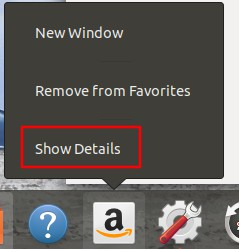
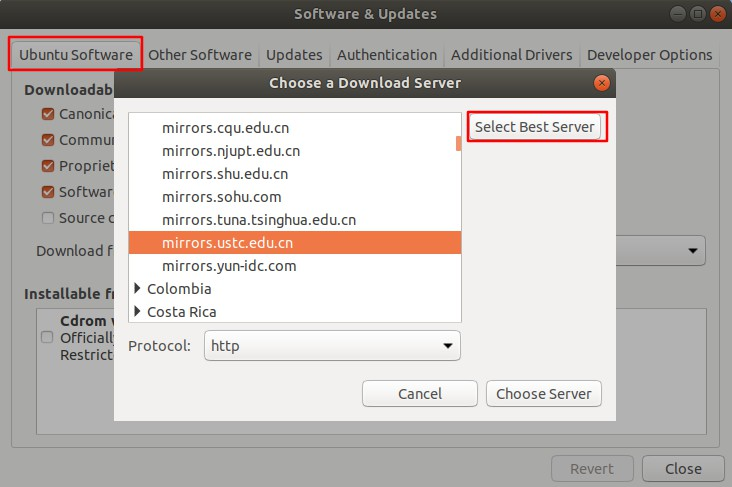
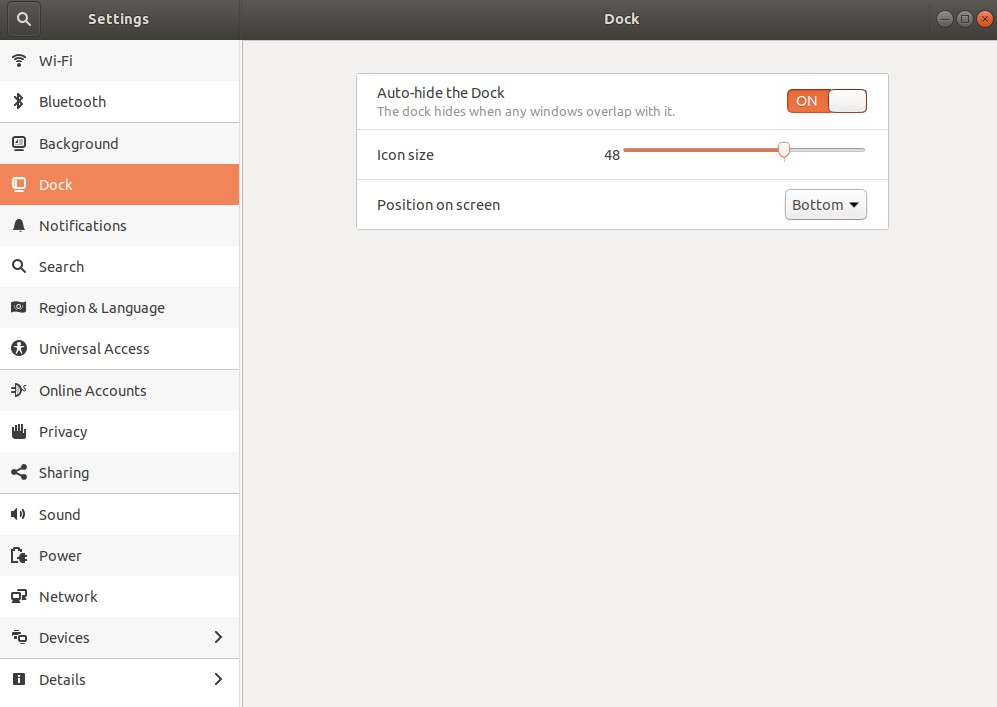
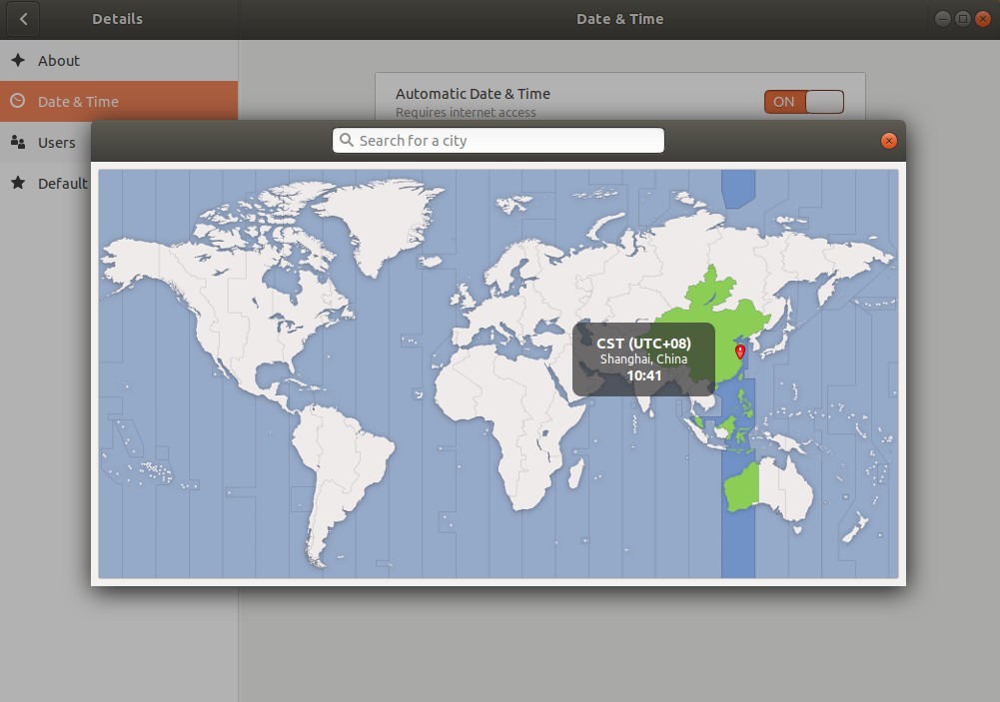
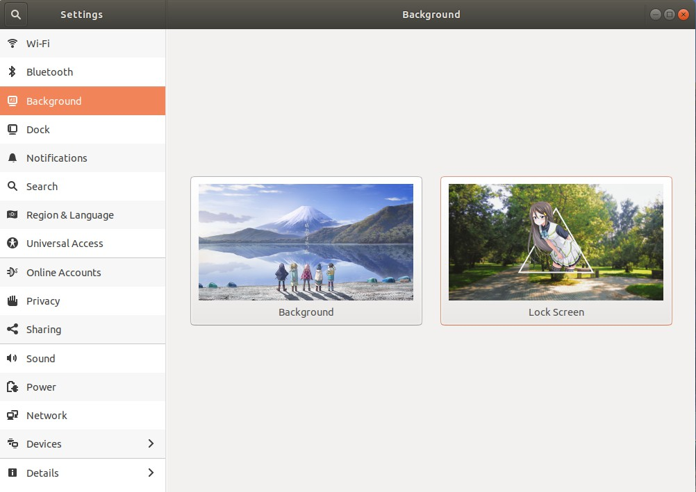
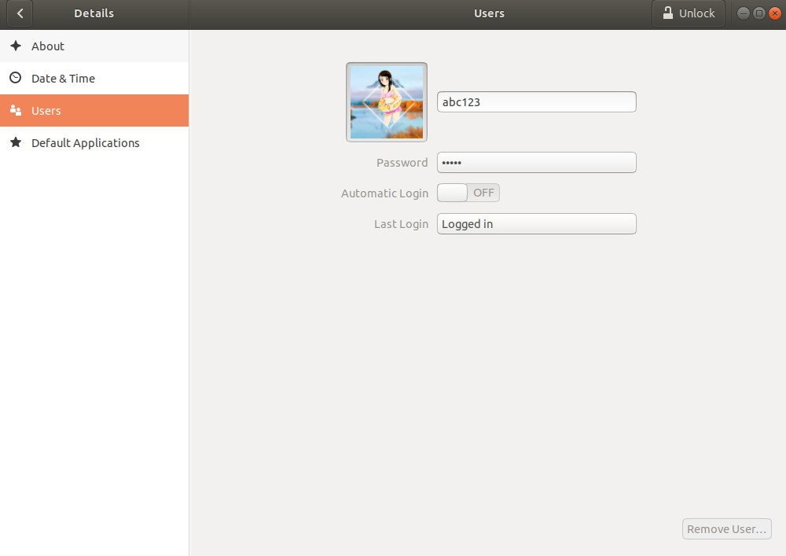
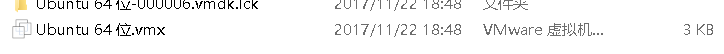
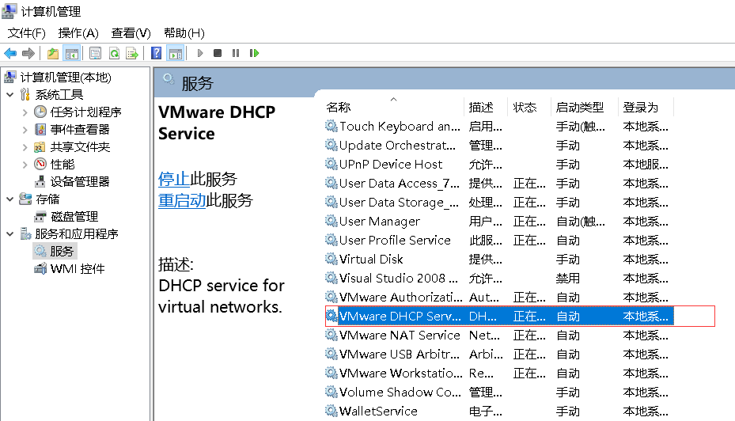
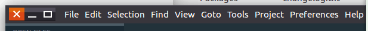
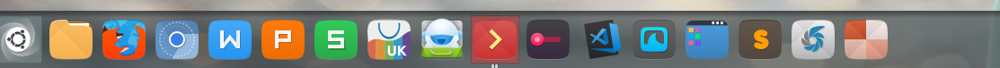

ubuntu重装后要做的事(manjaro看其他)
如何安装看ubuntu上安装软件方法3种方式安装
重点说下
1 | sudo apt-get update 更新源 |
当然是先安装玩ubuntu18.04咯,当然也有别的版本如voyagerlive和haiku OS
还是用ukylin18.04(我的天 这界面xp时代的吧)
Manjaro吧,不是Arch,不过这个gnome不好用吧
下个debian吧
web专业人员工具
计算机
Windows MAC Linux 这里说Linux了
文本编辑器
vim sublime vscode
atom brackets webstorm
浏览器
chrome Firefox Safari opera edge ie
图片编辑器
photoshop gimp
版本控制
git
自动化构建工具
grunt glup
优化步骤
首先删除一些不用的东西
1 | sudo apt-get remove packageName |
- unity-webapps-common 亚马逊链接 18.04中不是这个名字了,用右键查看细节去删除
- 
- rhythmbox 音乐,换网易云16.04,18.04的暂时用不了
- libreoffice-common libreoffice换wps.deb
- empathy 聊天软件, 18.04也没这个 没用（系统没这个) 有微信就可以了 github搜 Electronic WeChat 也有wechat这个版本
- deja-dup 备份,虚拟机中用不到
- thunderbird 自带邮件
- transmission-common 自带的bt下载客户端
下面这些随意了
- gnome-mahjongg 对对碰游戏，麻将
- simple-scan（扫描器删了，又不是打印，也不是用不到）
- aisleriot 纸牌
- gnome-mines 扫雷
- cheese 相机
- gnome-orca 屏幕阅读
- webbrowser-app 自带浏览器
- gnome-sudoku 数独
- onboard 屏幕键盘（虚拟键盘）
- landscape-client-ui-install 管理服务
换下源(建议先删除不要的东西后再换源,防止不要的软件更新)
software&updates中选择切换,虽然大家都选aliyun, 我选了ustc的,当然你可以自动选.

然后更新下源和包
1 | sudo apt-get update 更新源,换源后要执行 |
然后就是安装你想要的东西了.
解释下上面为什么
首先第一条更新源,其实我们的源,这些地址都保存在sudo cat /etc/apt/sources.list
当然你可以直接修改这里, 也可以按上面说的在software&updates修改.只不过修改完后要执行sudo apt-get update来更新, 就这么回事, 不然还是旧的,有缓存到本地软件列表.
而第二条sudo apt-get upgrade
这个命令，会把本地已安装的软件，与刚下载的软件列表里对应软件进行对比，如果发现已安装的软件版本太低，就会提示你更新。
总结下 update是更新本地软件列表，upgrade是升级本地软件
桌面整理
Dock
dock换到下面,并且设置自动隐藏

Ubuntu Dock 启用最小化操作：
1 | gsettings set org.gnome.shell.extensions.dash-to-dock click-action 'minimize' |
时间
时区修改下,为上海.在setting > detail中

背景及锁屏和头像
背景和锁屏在setting中修改

头像在detail中

vm上的工具
1 | sudo apt install open-vm-tools open-vm-tools-desktop |
解锁’Tweaks’隐藏的设置
安装gnome-tweak-tool
1 | sudo apt-get install gnome-tweak-tool |
1.打开软件，extensions
2.启动两个插件 appindicators dock
3.打开软件商城，附加组件
4安装 ??
user themes
dash to dock
Hide Top Bar
weather in the clock
开始安装web专业人员工具
先vim git 用apt-get安装好,剩下的用.deb双击好了,要么tar.gz解压好了
编程工具
都只要解压后 export就行.export PATH=$PATH:/usr/local/go/bin
前端
- chrome
- vscode
- nvm nodejs nrm
- mongodb+robo3T/nosqlbooster4mongo-4.5.2.AppImage
其他
- gcc
- IDEA+jdk10
- go
- jq 处理JSON格式的工具
- GIMP
终端工具
- guake
- terminator
- tmux
shell
- zsh
1 | sudo apt-get install zsh |
1 | //查看本机有哪些shell |
配置zsh
此时已经看到shell已经改变（关了shell重开），默认主题为robbyrussell，接下来我们还要再安装一些插件，更改外观让他变得更强大更好看。
zsh的配置文件在用户目录下的.zshrc里面
主题配置
更改主题只需在~/.zshrc 文件中 修改ZSH_THEME=”设置为你的主题”
而在~/.oh-my-zsh/themes下是各种的自带的主题(博主的是ys)。
设置方法如下如更改ZSH_THEME为自己的主题名即可
ZSH_THEME=”ys”
当然要更新下配置文件
source ~/.zshrc
查看主题截图请戳这里
插件配置
添加插件只需在~/.zshrc 文件中
~/.oh-my-zsh/plugins里面有默认自带的近百的插件
powerline的配置
zsh: corrupt history file /home/floodlight/.zsh_history
mv .zsh_history .zsh_history_bad
strings .zsh_history_bad > .zsh_history
fc -R .zsh_history
文字工具
- vim
- sublime
- wps
- typora
输入法
- 搜狗
系统工具
- htop
- shutter
触摸屏
- 自带synaptics
- Touchégg
- Fusuma
Indicator-Multiload，(这货有时候你开的多了 gnome桌面就崩了,所以卸载它就好了)
是一个很不错的系统指示器，可以显示CPU、内存、网络状态、SWAP交换空间、加载程序、硬盘使用等情况。
1 | sudo add-apt-repository ppa:indicator-multiload/stable-daily |
1 | sudo apt-get install lm-sensors |
lm-sensors是一款软件工具，可以借助嵌入在硬件的传感器，监测温度、电压、湿度和风扇运行状况。hddtemp这款工具可以通过S.M.A.R.T.数值，测量硬盘的温度。psensor是一款用于监测温度的图形化前端程序
Linux下Albert 相当于launchy
网络工具
- curl
- tsocks 代理
一些linux上遇到的问题
vm中
一旦在任务管理器中终止了VMware导致打不开虚拟机或电脑了，直接把所有的vmware的进程都给结束，然后打开虚拟机就可以了。
吓死我了，那个文件只有3K了

以后删除快照都要暂停机子搞
但这里出现问题，虚拟机中的机子都上不了网了，处理办法：
（”我的电脑”）右键—管理—服务，然后启动
VMware Workstation虚拟机不能联网的解决办法

左键失效

虚拟机中的ubuntu菜单栏 这个都点不开，特么这是触摸屏不能按 直接按触摸屏的左键就行
拖动图标，只要左键按住1秒就行

在18.04中如果点击左键还是失效,显示一个小手,那就按下win键.这个和16.04中按alt拖动不同. 这其实就是老是meta键触发,气死.
无法对下载下来的sublime固定dock上
就是右键没有add to favorites
小瑕疵
sublime没有pacman的版本.chrome也是. 当我用tar.gz的用之后怎么把他们都加到all applications中去?
怎么查看我的pacman中有这个软件包,用pacman -Q 不怎么好用